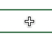
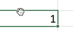
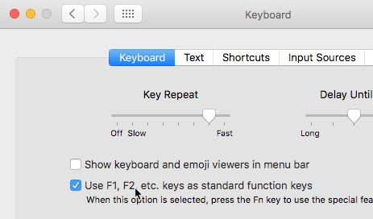

7 An Excel Refresher
Spreadsheets are everywhere, so it’s worth re-learning how to use them well. Reporters usually use spreadsheets in three ways:
To create original databases of events for sorting, filtering and counting. Examples include a long-running court case; the details of each opioid death in a city; a list of police shootings and their documents; or even a list of your own public records requests or contact log.
To use data created by others for fast, simple analysis and data cleanup. Many government agencies provide their information in spreadsheet form, but they often require some rejiggering before you can use them.
To perform simple, straightforward analysis on data and share with team members. This is becoming less common as more reporters learn programming languages, but it’s still common in newsrooms to share data, especially through Google Sheets.
This guide will use Excel rather than Google sheets because it is a little easier to work with larger datasets and is still available in most newsrooms. But the Google Sheets has essentially the same capabilities and is easier to share with teammates. They also have a few features lacking in Excel when it comes to getting data from the Web. 6
Some reporters flinch at typing in 30 or 100 entries into a spreadsheet. You shouldn’t. If you learn to take notes in a structured way, you’ll always be able to find and verify your work. If you try to calculate a sum of 30 numbers on a calculator, you’ll have to type them all in at least twice anyway. Also, getting used to these easy tasks on a spreadsheet keeps your muscles trained for when you need to do more.
7.1 Re-learning Excel from the ground up
The spreadsheet grid
When you start up a spreadsheet, you’ll see letters across the top and numbers down the side. If you ever played Battleship, you’ll recognize the idea – every little square, or cell, is referenced by the intersection of its column letter and row number:
B2 is the cell that is currently active. You can tell because it’s outlined in the sheet and it’s shown on the upper left corner.
Mouse shapes
| BFWPS: The Big Fat White Plus Sign. This is the default shape, and you can never get into trouble when you see it |  |
| The Copy Tool, or the thin black cross. When you see this, you’ll copy anything that’s selected. This can be good or bad. |  |
| The Evil Hand. (In Windows, this is the Evil Arrow). If you use this symbol, you will MOVE the selection to a new location. This is very rarely a good idea or something you intend. |  |
Selecting cells and ranges
Spreadsheets act only on the cells or regions you have selected. If you begin typing, you’ll start entering information into the currently selected cell.
To select: Hold the BFWPS over the cell and clice ONCE – not twice. Check the formula bar to make sure you’ve selected what you think you’ve got. You can also look at the bottom right of your spreadsheet for more information.
You’ll often work with ranges of cells in formulas. These are defined by the corners of the area you want to work on – often a column of information. In the example below, the range is A1:B6, with the “:” referring to the word “through”.
To select a group of cells and act on them all at once: Hover the BFWPS over one corner, click ONCE and drag to the diagonal corner. Make sure the Evil Hand is nowhere to be seen. The entire area will be shaded in except for the currently selected cell. Look at the upper right corner to see how many rows and columns you selected.
To select a column or row : Hover the BFWPS over the letter at the top of the column. For a row, hover it over the row number in the margin
The areas of the spreadsheet have different visual clues, and learning to read them will make your life much easier.
This image shows some key areas on the screen when you’re just viewing the sheet:
ready
This is how it changes when you’re editing
editing
Entering data
Select the cell and start typing. The information you type won’t be locked into the cell until you hit the Return / Enter key, or move your selection to another cell. Hit “Escape” to cancel the entry.
You can’t do a lot of things while you’re editing, so if you have a lot of greyed out menu items, look at your formula bar to see if you are still editing a cell.
If you’re having trouble getting to a menu item or seeing the result of your work, try hitting “Escape” and try again. You may not have actually entered the information into the sheet.
Locking in headings
As your spreadsheet grows vertically with more rows, you’ll want to be able to see the top all the time. When it grows horizontally with more columns, you’ll probably want to see columns in the left, such as names. This is called “Freezing Panes” – you freeze part of the page so it stays in place when you move around.
Select the corner that you want frozen. For example, if you want the first three columns frozen (A:C) and the first row frozen (1), then select the cell in D2. This is the first cell that will move, and everything to the left of it and above it will stay on the screen.
freeze panes
Formatting tricks
Use the buttons or the format dialog box to make numbers easier to read.
If a column is filled with a lot of text, select the column and look on the Home ribbon next to the formatting area for “Wrap Text”. This means that when you double-click to widen a column, it will get taller, not wider. This is good when you need to save valuable real estate on the screen.
7.2 Getting started with a dataset
SLOW DOWN! Don’t do anything until you understand what you have in front of you and can predict what your next mouse click will do to it.
Most data we encounter was created by someone else for some purpose other than ours. This means that you can’t assume anything. It may not be complete. It may be inaccurate. It may mean something completely different than it appears at first blush.
First steps
- Document where you got the spreadsheet and how you can get back to the original.
- Read anything you can about what it contains. Look for documentation that comes with the data.
- Save the original into a safe place with its original name and metadata. Work on a copy.
- If the spreadsheet shows #### instead of words or numbers, widen your columns. If it shows 7E-14 or something like that, format them as numbers, not “General”.
- Check your corners – look at the top left and bottom right. Is the data all in one area? Are there footnotes or other non-data sections mixed in? We’re going to want to fix that later.
Interview your data
Headings
The most fraught part of data reporting is understanding what each column actually means. These often have cryptic, bureaucratic names. You may need to go back to the source of the data to be sure you actually understand them.
If your data doesn’t have any headings, that’s going to be your first priority. In effect, you’ll need to build what we call a data dictionary or record layout if one hasn’t been provided. Many reporters create these as a page in a dataset.
Unit of analysis
A unit of analysis refers to the items that are listed in the rows of your dataset. Ideally, every row should be at the same unit of analysis – a person, an inspection, or a city, for example. Summaries should be separated by a blank row, or moved to a different sheet. Think of this as the noun you’d use to describe every row.
Row numbers
The data was probably given to you in some sort of natural sort order. Different computer systems sort differently – some are case-sensitive, others are not. It may depend on when and where the data as created! The order of the data may even depend on a column you don’t have. If you don’t do something now, you’ll never be able to get back to the original order, which could have meaning for both the agency and for fact-checking.
7.3 Video walkthrough
These first steps, along with adding an ID row, are shown here. You can follow along with the same dataset.
7.4 Keyboard shortcuts
For Mac users, it’s much easier to use Excel if you override the action of function keys while you’re in the program. In your Mac’s System Preferences, choose Keyboard, and select the box that says, “Use F1, F2, etc. as standard function keys.” (NOTE: If you have a MacBook Pro with a touch bar (circa 2017-2020 or so), this option may not be there. Instead, go into the Shortcuts section of the keyboard options and turn off all of the options for Mission Control. Those are the ones that interfere with Excel.)

Once you’ve done that, these keyboard shortcuts will work:
| To do this | Windows or IMac | Macbook |
|---|---|---|
| Edit a cell | F2 | Ctl-U or F2 |
| Toggle between absolute and relative references | F4 | Ctl-T or F4 |
| Insert cut cells | Ctl+ | Ctl+ |
| Delete a cell | Ctl- | Ctl- |
| Select the top left of a spreadsheet | Ctl-Home | Ctl-Fn-Left arrow |
| Move to the bottom right of a spreadsheet | Ctl-End | Ctl-Fn-Right arrow |
| Select a region (a contiguous rectangle of cells that are filled out) | Ctl -* | Ctl-Shift_spacebar |
You should practice getting around a spreadsheet efficiently, since scrolling with the mouse while selecting is a lesson in frustration.